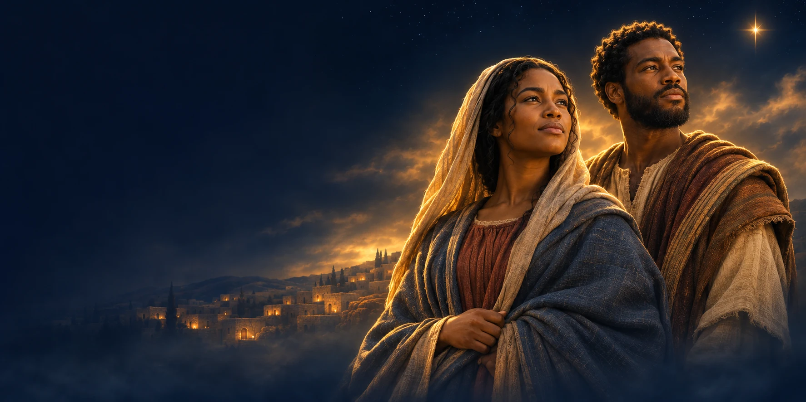

Music
A Christmas story carried through song.

The Faith Center presents
The Story Before the Manger
A Christmas stage production
told through music, dance, and drama.
Sunrise, Florida · Free admission
The story before the manger
They could not see the whole journey. They chose to trust anyway.
Before the manger, Mary and Joseph faced a future they could not fully see. Follow their journey of courage, faith, and trust through music, dance, and drama in CHOSEN: The Story Before the Manger.
Make room for hope this Christmas.
Save the DateThe official CHOSEN promo
Watch the official promo for CHOSEN: The Story Before the Manger. Watch on YouTube
Experience CHOSEN
An evening to experience together.
A Christmas story carried through song.
Movement that brings emotion to life.
Mary and Joseph’s journey of faith and courage.
Meet Mary & Joseph
Meet the performers bringing
Mary and Joseph’s story to life.
AS MARY
AS JOSEPH
A Christmas invitation
Share an evening of music, dance, and drama
at The Faith Center.
Plan your visit
Join us in Sunrise
Sunday, December 20, 2026
6:00 PM Eastern
A few things to know before you go.
Sunday, December 20, 2026, at 6:00 PM Eastern.
The Faith Center, 5555 NW 95th Avenue, Sunrise, FL 33351.
Free admission. Bring someone you love.
Good things are better together
Send a little hope their way. Invite someone to CHOSEN.
DEC 20 6 PM · FREE ADMISSION
Save the Date